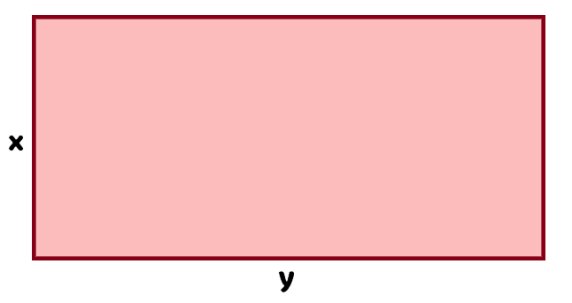

6. Sınıf Matematik · 2. Tema · MAT.6.2.1

Bilinmeyen Niceliklerden Cebirsel İfadelere
Gerçek yaşam durumlarında bilinen niceliklerden bilinmeyen niceliklere ilişkin muhakeme yapabilme
Gerçek yaşam durumlarında bilinen niceliklerden bilinmeyen niceliklere ilişkin muhakeme yapabilme
Gerçek yaşamda bazı nicelikleri bilir, bazılarını ise bilmeyiz. Örneğin bir tişörtün satış fiyatı 80 TL ise x tane tişörtün geliri 80x TL olur. Burada x satılan tişört sayısını, 80 ise bir tişörtün fiyatını temsil eder.
4x ve 7 ayrı terimlerdir. Toplama veya çıkarma işaretleri terimleri ayırır.
4x terimindeki 4, değişkenin katsayısıdır. “4x”, 4 ile x'in çarpımıdır.
7 değişken içermediği için sabit terimdir.
2x+2y ifadesi tek bir hikâyeye bağlı değildir. Kenarları x ve y olan bir dikdörtgenin çevresini, iki farklı ürünün iki katlarının toplamını veya başka bir gerçek yaşam ilişkisini temsil edebilir.
Bir okul kütüphane kampanyası için bir tişörtün baskı ve diğer maliyetleri 35 TL, satış fiyatı 80 TL olsun. x tane tişört satıldığında gelir ve maliyet nasıl değişir?
| Tişört sayısı x | Gelir | Maliyet | Fark |
|---|---|---|---|
| 1 | 80 | 35 | 45 |
| 2 | 160 | 70 | 90 |
| 5 | 400 | 175 | 225 |
9m+5n ifadesini iki farklı biçimde yorumlayabiliriz:
9 TL'lik m tane simit ve 5 TL'lik n tane ayran için ödenecek toplam ücret.
Birim fiyatı m TL olan 9 ürün ile birim fiyatı n TL olan 5 ürünün toplam maliyeti.
7p ve 5a iki terimdir. 7 ile 5 katsayılar; p ile a değişkenlerdir. Cebirsel ifade, iki farklı niceliğin toplamını temsil edebilir.
Bir cebirsel ifade farklı biçimlerde yazılabilir. Temsil ettiği değer aynı kalıyorsa yazılan bu ifadeler denktir.
Kenar uzunlukları x ve y olan bir dikdörtgenin çevresi, karşılıklı kenarların ikişer kez alınmasıyla bulunur.

Aşağıdaki ifadelerden birini seç ve ona uygun bir gerçek yaşam durumu düşün.
Değişebilen niceliği temsil eder.
Değişken içeren terimdeki çarpan durumundaki sayıdır.
Değişken içermeyen terimdir.
Farklı yazılsalar da aynı ilişkiyi/değeri temsil ederler.